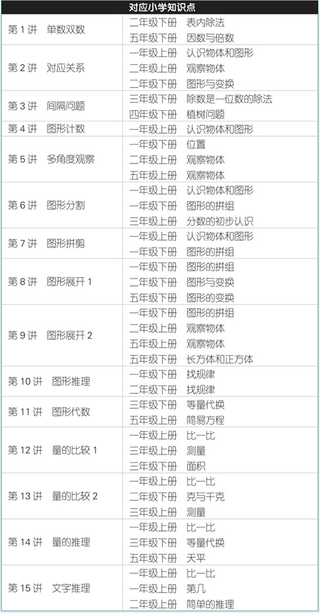
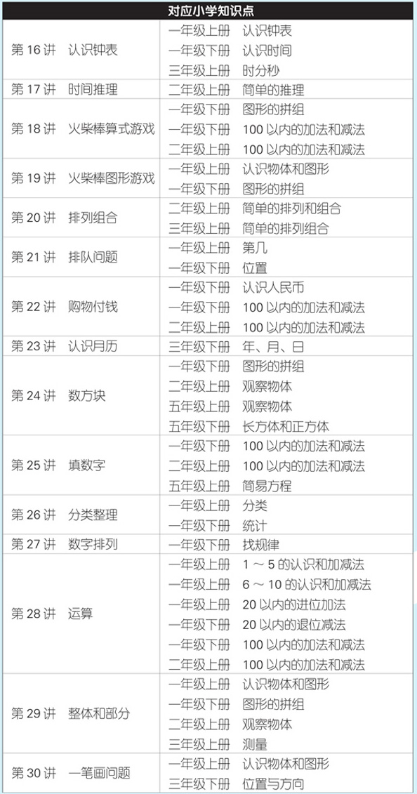

教育的最高目标是培养具有逻辑思维能力和掌握抽象复杂概念能力的人。
——皮亚杰
“数学是思维的体操”，而思维能力是智力的核心，也就是说，学习数学可以让孩子更聪明。我们在实践中发现，以数学知识为载体培养孩子的数学能力，取得了一科学习、多科受益的效果。许多孩子通过学习数学，不仅数学成绩非常优秀，而且其他学科也表现突出，就连学习琴棋书画、吹拉弹唱也变得相对容易。因为数学培养的是思维能力，思维能力强的孩子相对聪明，当然，聪明的孩子学什么都快。
但思维的培养是有关键期的，0～3岁是大脑建构的关键期，4～8岁是思维培养的关键期，6岁左右是思维发展的爆发期，在爆发期培养孩子的思维能力，效果能够成倍提高。实践证明，孩子学前经过科学的数学思维培养，对将来学习小学数学非常有利。孩子不但喜欢学习，成绩优秀，而且后劲十足。
为什么孩子学计算那么难？那是因为他们没有真正理解“数”是什么。为什么一些孩子随着年级的升高会出现艰难的“爬坡现象”？那是因为他们学的是“记忆数学”，而不是理解数学。音乐培养的是乐感，打球培养的是手感，数学培养的也是一种感觉，那就是数感、形感和空间感。
数学感觉的培养，靠的不是背诵，不是记忆，不是简单的讲授，靠的是动手触摸与亲身体验。越小的孩子越难教，教越小的孩子越需要高超的方法。当然，培养数学感觉需要素材，家长自己查找资料也是相当麻烦的事情。因此，全脑开发教研中心的老师在总结课堂教学经验的基础上，从感知集合、数、形、量、时间、空间和钱币认知等几个方面，将知识进行分解、糅合，梳理出30个重要的思维训练点，分30讲对不同的思维训练点进行解析，并提供大量思维训练题供孩子练习使用，以此来提升孩子的数学思维能力，使之能够更好、更顺利地实现幼小衔接，将来更好地适应小学的数学学习。
本书重点涵盖幼升小面试的各种知识点，内容全面，且有一定的难度，希望家长有选择地使用本书。由于一年级数学需要从最基础的数学学起，本书也可作为一年级孩子的数学辅助教材。
全脑开发教研中心

